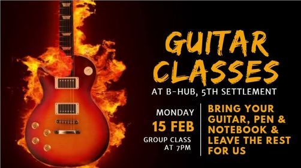
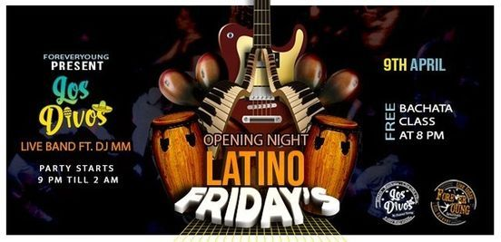
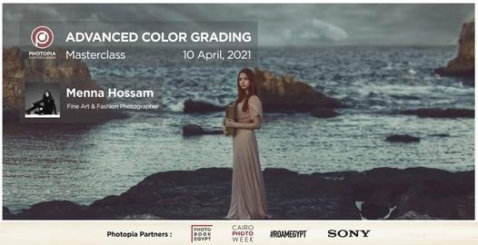
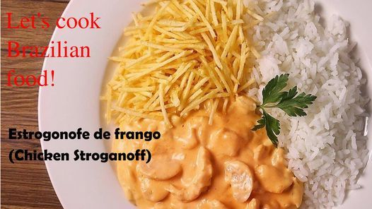

CAIRO EVENTS
 
Wafaa Al-Nil Festival
Egyptians cherish and celebrate the Nile since ancient times. In the past, beautiful girls were sacrificed and thrown into the river in hope of a good harvest Today the festival is celebrated with concerts,poetry readingsand family friendly competitions
DATE: 01 August 2021-31 August 2021
Prophet Mohammed's birthday
On the 12th day of the islamic month of Rabi'Al-Awal,Egyptians celebrate the prophet's birthday with readings from the Quran as well attending religious lectures
DATE: 19 October 2021
VENUE: Throughout the city
This festival brings together artist, filmmakers, producers, writers and critics together and celebrates Egyptian, Arab and African films
DATE:01 November 2021-30 November 2021
VENUE: Various locations
COST:Various
Advanced Color Grading | Masterclass by Menna Hossam, 10 April | Event in Cairo | AllEvents.inAdvanced Color Grading | Masterclass by Menna Hossam Transform your images into mystical art pieces in this color grading masterclass with Menna Hossam. You'll learn how to build your own coloring style and how to utilize adjustment layers to create gorgeous color tones for your images.
Objectives: • Basic retouching techniques • Color theory and how it applies in post-production. • Color grading step by step. • Working with adjustment layers (curves, selective color, hue & saturation, color balance). • Liquify tool. • Adding textures. • Building your color toning vision
Basics of photoshop & knowledge of basic tools is a prerequisite to attend. What to bring: A laptop with photoshop is a must!About Menna Hossam: Menna is a fine art and fashion photographer with a knack of framing fantasy themes and visual story telling behind every shot. she started off her photography journey during her college years and she’s always on the quest to capture the new and undiscovered.
Venue: 22 Cleopatra Street, El Korba, Heliopolis Date: 10 April, 2021 Time: 1-6PM Maximum number of attendees: 10
Payment Options: -Cash or Credit Card at Photopia : 22 Cleopatra Street, El Korba, Heliopolis -Through our bank account ("CIB: 100017118913")
For more info please contact us: 01211338991

Brazilian cooking Class for kids
Brazilian cooking Class for kids
The stroganoff is originally a Russian dish and it traveled all over the world, being present in a lot of different countries, and it's traditionally made with beef. But in Brazil we have our special way of doing things and it makes everything so much better!
So in this workshop we are going to cook the Brazilian version, made with chicken and lots of love. The participants will learn how to prepare it as a native Brazilian and will be able to eat it too, tasting the whole experience of a daily food in Brazil.
Our chef : Dandara C. R. Peixoto from Brazil
Age from 6:16 years
Time 5:7 pm
Fees : 75 Le
Date Monday 12 of April 2021
Limited no for only 10 kid Max
